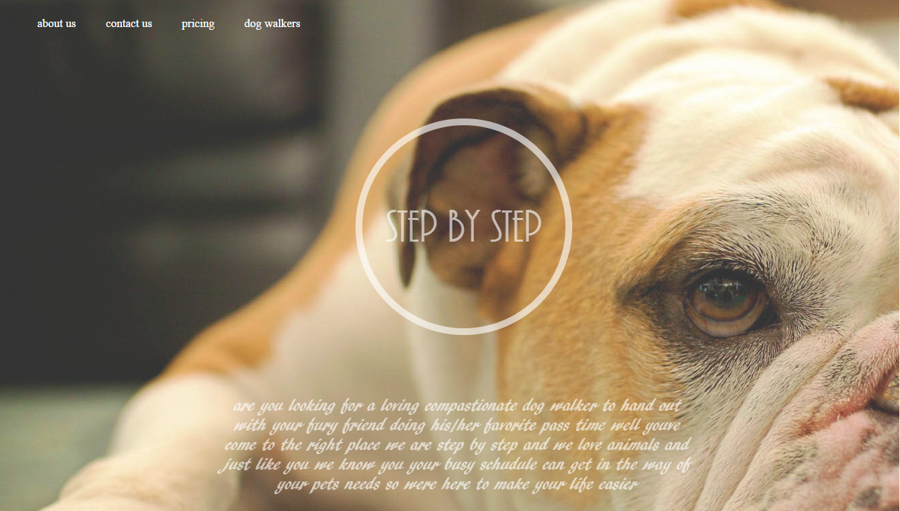

back

Hollys is a mockup that was created for an artist or blog website that would easliy convey information in a sleek design in mobile or desktop seamlessly.
sahari is a mockup that was created for a blog website with a darker feel and a color contrast to make the designstand out visually.
Step by Step is another mockup for a dog walking service that was created to be mobile friendly visualy appealing and easy to use all while having a fresh look and design .
